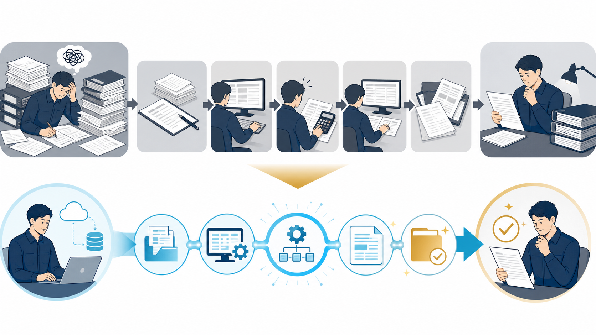

SALES / ESTIMATE WORKFLOW
見積書作成の時間を減らす方法｜工数を測ってから自動化する
見積書作成の時間は、入力だけでなく、条件確認や承認、差し戻しに隠れています。まず工程を分け、例外案件を含めた現状を測ってから改善します。

見積書作成の時間を工程ごとに分解する
「見積作成に1時間かかる」という記録だけでは、改善箇所が分かりません。案件受付から送付までを分解し、担当者、入力元、確認内容、差し戻しを記録します。複数のシステムへ同じ情報を入力しているなら、最初の候補です。
| 工程 | 確認すること | 改善の例 |
|---|---|---|
| 受付 | 依頼内容の不足・重複 | 入力フォームや項目表 |
| 条件確認 | 数量・納期・値引き条件 | 確認リスト |
| 商品選択 | 品番・単価・代替品 | マスタの最新版 |
| 転記・計算 | 二重入力・税・合計 | テンプレートや連携 |
| 承認・送付 | 承認者・宛先・添付 | 人の最終確認 |
まず「定型案件」と「例外案件」を分ける
すべての案件を同じ自動化に載せると、例外の確認で時間を使います。標準商品、決まった値引き、通常納期の案件を定型として分け、特殊仕様・個別契約・大幅な値引きは例外として人が扱います。
定型を定義
商品・単価・条件が決まる案件を集める。
例外を隔離
特殊条件は自動処理の対象から外す。
見直す
例外の件数と理由を月次で確認する。
自動化する範囲は「案を作る」までにする
AIに任せやすいのは、依頼文から見積項目の候補を抜き出す、過去の書式に合わせて下書きする、抜けている条件を質問する、といった補助です。金額、税、納期、契約条件、宛先は、送付前に人が確認します。
営業全体のどこから着手するかは営業効率化の方法、AIの導入可否を測るなら営業・見積もり工数シミュレーターを使って整理できます。
削減時間だけでなく、差し戻しと誤りを測る
改善前後で、1件あたりの作成時間、確認時間、差し戻し回数、送付までの時間を比べます。AIを入れて作成時間が短くなっても、確認で倍の時間がかかるなら改善とは言えません。定型案件と例外案件を分けて測ると、結果を誤解しにくくなります。
見積工数を仮説から実測へ変える
たとえば想定例として、月40件の見積を1件45分で作っているなら、月間作業は1,800分です。下書きで10分短くなっても、確認に5分かかるなら、実際の削減は1件5分です。数字は効果を保証するものではなく、自社で測るための計算の型として使います。
| 測定項目 | 導入前 | 導入後に見ること |
|---|---|---|
| 作成 | 受付から下書きまで | 転記・計算の短縮 |
| 確認 | 上長・営業の確認時間 | 修正箇所と差し戻し |
| 送付 | 承認から送付まで | 宛先・添付の漏れ |
自動化の前に見積マスターを整える
商品名、品番、単価、税区分、納期、値引き条件が複数の場所に散らばっていると、AIの下書きも安定しません。最新版の管理者と更新日を決め、例外案件は別の確認ルートへ送ります。
見積書は顧客へ届く金額文書です。AIが整えた書式をそのまま送らず、見積書AIデモのような下書き用途から始め、承認者と停止条件を固定してから範囲を広げます。
承認の流れを短くしすぎない
見積書の効率化で削ってはいけないのは、金額や契約条件を確認する工程です。承認者が見る項目を、商品・数量・単価・税・納期・値引き・宛先へ分け、AIが下書きした箇所と人が判断した箇所を記録します。
条件を受ける
不足している数量や納期を確認する。
案を作る
転記・計算の下書きを整える。
人が承認
金額・条件・宛先を確認して送る。
例外案件を改善の材料にする
特殊仕様、個別契約、大幅な値引きが多い場合は、例外を無理に自動化しません。例外の理由と件数を記録し、標準化できる条件が見つかったときだけマスターやテンプレートへ戻します。
見積の改善は、作成者の速度だけでなく、営業・上長・経理の間で同じ条件を確認できることが価値です。営業効率化の方法と工数シミュレーターを使い、前後の差を記録してください。
見積改善を次の案件へ戻す
一度テンプレートを作って終わりにせず、案件後の気づきを次の見積へ反映します。週次で次の項目を確認すると、改善が担当者の経験だけに戻りにくくなります。
- 商品名、数量、単価、納期など必須入力がそろっていたか
- 自動計算の結果を誰が確認し、どこで承認したか
- 標準案件と例外案件を同じ時間で扱っていないか
- 差し戻しや再作成の理由が記録されているか
- 作成から承認までの実測時間が前回より変わったか
よくある質問
Excelの見積テンプレートでも効率化できますか？
できます。まず項目、単価、計算式、承認欄を標準化します。テンプレートが複数ある場合は、似た書式を一つに寄せるだけでも転記と確認の負担を減らせます。
見積書を完全自動で送付できますか？
技術的に可能な場合でも、最初から完全自動にする必要はありません。金額、条件、宛先を人が確認する承認工程を残し、誤送付が起きない条件を検証します。